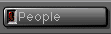
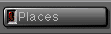
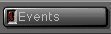
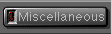
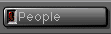
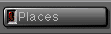
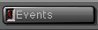
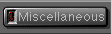

|
Back
to Demos Explained
|
These web pages archived
from http://www.oldskool.org/demos/explained/
on October 17th 2000 in compliance with the statement "If you would like
to use this website as a historical reference of the PC demoscene or a
starting point for your own pages, feel free to do so as long as you give
me (Trixter) credit somewhere." found on the home page. For the most part
these web pages are outdated, most of the links are not functional. They are
provided for the content which is found specifically on the pages.
|
![[Home]](up_home.gif)
![[Glossary]](up_gloss.gif)
![[History]](up_hist.gif)
![[Effects]](up_effec.gif)
![[HowToCode]](up_howto.gif) 

Demo Music and Art
Music
Music Groups are groups of people who compose music. 90% of the
music composed is tracked with a tracker; the rest is either MIDI
or another music format. Probably the most well-known music group
is the KFMF. For more
information on music formats or trackers, feel free to visit the Glossary.
These are examples of typical music you hear in demos. All sound
samples are provided in both Microsoft WAVE and Sun/NeXT AU format. All
samples were taken directly from a playing Gravis Ultrasound, and sampled in 8-bit
mono 11KHz sound.
Microsoft WAVE file format examples
Chip Music. (130K) (unreleased song by Mark Brown) Most chip music is very small, because the name "chip music" comes from the instruments used--they are very small, and sound like a cheezy on-chip synthesizer. Still, they can escape that genre in rare cases, and sound like this sound bite, which is as good as chip music gets. (Ironically, the sound byte is 130K, while the source song is only 25K!)
Mellow Techno. (160K) (from Verses/EMF) This is your "typical" demo music. It's dancable, but has more style and structure than regular dance or techno music. (Americans consider this type of music "european"; europeans consider it cool. ;-)
Rock & Roll. (158K) (from Show/Majic12) Some demos are abandoning the traditional demo music and coming up with music that mimics traditional styles. This example, from Majic 12's Show demo, is a bit like rock.
Techno. (221K) (song by AiRoN Jayder) This is the second-most common style of music for demos--techno. Dance music, full of raw energy.
Unclassified. (140K) (from Wired '94 results intro) Occaisionally you'll hear music that just doesn't fit into a category. Sometimes an experiment, sometimes awkward, but always fresh to listen to.
Sun or NeXT ".au" format examples
(For descriptions, see above.)
Mellow Techno
Techno
Rock & Roll
Chip Music
Unclassified
Graphics and Art
Much of the art produced by graphicians is hand-drawn on
the computer, usually with DeluxePaint, one of the most popular paint
programs used by demo artists. Other times, ray-traced art is used, but
this is generally frowned upon, because unless it's a fairly complicated
object, it doesn't take a greal deal of time or effort. However,
scanning a picture is never allowed. If a picture is scanned,
who's to say the person claiming it's his artwork actually did it? (The
only exception to scanning is the popular Amiga artist technique of
drawing something on paper in pencil outline, scanning it, then
re-working it on the computer. This is considering mildly
acceptable.)
Here is an example of some of the
fantastic art created by
graphicians.
ANSI Groups are groups of people who draw graphics for BBS's, but the
graphics they draw are entirely made up of ASCII and extended ASCII text
characters. (This is so the graphics can be displayed in text mode, or
conviently transmitted via a BBS while on-line.) ANSI is the term given
the standard color and positioning codes that are embedded in pictures
to give them color, etc. More recently, ANSI groups have been drawing
pictures for demo groups. Here's an example of ANSI Art.
{kind=link}
{kind=link}